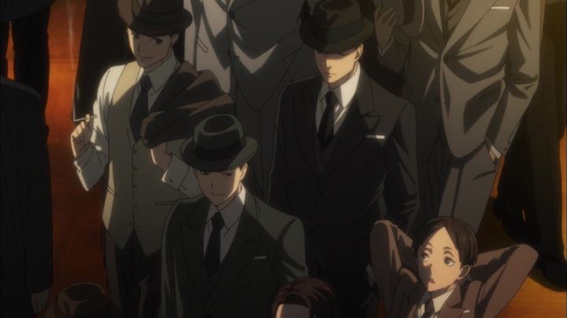

While a rare setting in anime, it's fun to see a Japanese take on the early 1900's, especially if set in America or England. 2007's "Baccano!" is still refered as the benchmark in that niche genre. In 2016, we got two such series: "91 Days," and "Joker Game." The two tend to get confused with each other, and typically, "91 Days" is the one that fans will watch. That's a shame; "Joker Game" is a distinct show of its own, and a surprisingly great one at that."Joker Game" is set around 1937, shortly before World War II breaks out. Based loosely on real events, it tells the story of a newly formed Japanese spy agency, operating independently from the national military, to gather intelligence from around the world to better inform Japan's actions. D-Agency is that "clandestine" organization, made up of explicitly non-military-graduates: just regular citizens. After being subjected to a strict exam to train their mental and physical abilities, the group (of only 8 young men) are sent out as spies, hidden in plain sight, on missions and placements throughout the globe. Exactly how the information gathered will be used isn't their concern: their role is simply to gather the intelligence, to avoid being discovered as either spies or double-agents, and to maintain their rule of "don't kill, and don't die."History fans will probably know more than I, but this is clearly a complicated time period to cover. Nazi politics was spreading in Germany and occupying parts of Europe, and ultimately, Japan would side with the bad guys in World War II. The show seems to be aware of this, and tries to keep the protagonists in D-Agency as impartial as possible to anyone except Japan's best interest (except in one episode, when an agent is told that Japan would officially side with Germany, in which he clearly hesitates and doubts the move, even though it doesn't affect his current situation). The show also comes across as critical to the mindset and culture of the Japanese military from that period, which at the time was proud, with their own motto to kill and carry out their duty at all costs, and to not hesitate to die for their country or to commit suicide for their honor. Why was D-Agency against this? Simply common sense: killing would gather too much attention, and committing suicide would all but prove that Japan had a spy in their midst. A few episodes are dedicated to the army's frustration against this external agency, going so far as to either best them or sabotage them, only to realize D-Agency was several steps ahead of them. These Japanese spies aren't necessarily heroes. In a two-episode introduction, we learn about the agency through the eyes of one military outsider, Sakuma. While remaining professional in working with them, he immediately thinks of Yuuki, the older leader of the group, as cold and calculating, using a cane as part of an elaborate misguiding persona that better allows him to disguise himself in other situations. Sakuma refers to the young agents as "monsters," having gone through extreme training to play their roles, and willingly agreeing to missions that will leave them in foreign countries, alone, for possibly years at a time. These agents are clever, sly, and pragmatic, and among themselves, boastful of their skill and smug to anyone outside their group. One scene shows them playing a game of poker, inviting Sakuma to join, and explaining after his loss that they were really playing the "Joker Game," wherein others off the table are allowed to hint at what other players are holding, or to lie about it, a game of trust and deception. That arc ends with a high-stakes group mission, where Sakuma appears to be set up to kill himself, with the other agents simply watching, until he manages to realize the solution. Would they have really let him die? Is this all a game to them? While they maintain the rule to "not kill," they otherwise seem to have no qualms about others dying, and are fully prepared to endure torture, or to die if required (and to survive at all costs, using any back-handed strategies available to them). That grey-area suits the genre, and makes the show all the more interesting. The ACTUAL framework of "Joker Game" is a series of short-stories, each about one episode long, following one of the agents in countries like France, England or China, deep into their fake personas and on the verge of discovering new info relevant to Japan, or on the verge of being caught. This works well in practice, not requiring the viewer to pay close attention across several episodes, and forcing the episode to quickly introduce and explain the context of the new setting. Each story has exciting reveals and climaxes. A couple later stories delve into the mystery behind who Yuki really is, and his personal history. Simply put, the writing is excellent, and is portrayed in an exciting but intellectual manner. I always had trouble enjoying films of James Bond, Jason Borne, or George Smiley, and "Joker Game" shows how to do things properly. Yes, it often relies on exposition to explain details, and might be better as a book than a show, but I was still fully engaged throughout.Production I.G. handles the animation, and their reputation for grounded, realistic and consistent production values is well suited for "Joker Game." Environments are detailed, and character designs are distinct enough (... barely enough...) to help the viewer follow what's happening. Visually, the show looks great, almost luxurious, worthy of a theatrical film. Unfortunately, animation is significantly more limited, relying a lot of CGI background characters for crowds and pedestrians, and not having many opportunities to animate anything more than talking heads or walking men in suits. The music, with one or two over-used but effective tracks, is very forward, but very suitable. In a text-heavy series, it's essential for making the show as watchable as it is. This is an "international" show, and the Japanese dub might seem the best option, both because of authentic voices for the Japanese characters, and because it occasionally uses English for American characters, while Funimation's English dub relies only on accents (and, as usual, American and Japanese characters sound identical). But even in the Japanese dub, they don't use alternative languages consistently (they might only do so once or twice to get the idea across, then switch fully to Japanese to make it easier for the target audience), and I couldn't discern any accent on other characters, making French, German, etc. characters sound as though they lived in Japan their entire lives. Therefore, I think the English dub, heavy with global accents, works better, and as a bonus, it simply sounds cool. Really cool.It's not easy to write a spy-thriller that balances action with hidden espionage. "Joker Game" manages to pull it off better than any example I know of, even compared to the best British or American shows and films. It's smart, cool, and exciting. And unfortuntely, it was quickly overlooked, much like its spies in plain sight. But it's much more capable than it appears on the surface, and is worth investigating.
- "Ani" More reviews can be found at : https://2danicritic.github.io/ Previous review: review_Jojo's_Bizarre_Adventure_-_Phantom_Blood,_Battle_Tendency,_Stardust_Crusaders Next review: review_Jormungand